ELITEA Code¶
Get Started with ELITEA Code¶
Welcome to the ELITEA Code your comprehensive resource for harnessing the power of the ultimate AI-powered IDE extension that's set to transform your coding workflow. ELITEA Code integrates seamlessly with VS Code and InteliiJ, offering intelligent suggestions, automating routine tasks, and providing a level of adaptability that's unmatched, all designed to elevate your coding experience.
Why Choose ELITEA Code?¶
ELITEA Code is not just another IDE extension. It's a revolutionary tool designed to:
- Boost Productivity: With AI-powered suggestions, ELITEA Code analyzes your code in real-time, offering insights to enhance code quality, readability, and performance.
- Automate Testing and Documentation: Simplify the creation of unit tests, integration tests, and automated tests. ELITEA Code also enriches your code with automatic commenting, making it more accessible and maintainable.
- Customizable Assistance: Tailor ELITEA Code's assistance to your project's specific needs with customizable prompts, both internal and powered by ELITEA Backend's LLMs for external prompts.
- Collaborative Features: Share prompts, folders, and configurations with team members for seamless collaboration.
Key Features¶
ELITEA Code comes packed with features designed to streamline your development process:
- AI-powered code suggestions for smarter coding
- Automated generation of unit tests, integration tests, and automated tests
- Automatic code commenting for better maintainability
- Customizable internal prompts for tailored assistance
- Project-specific external prompts, agents and datasources powered by ELITEA Backend
- Code explanation and optimization recommendations
- Seamless native IDE integration
- Folder Sharing with team members or groups for collaborative work.
- Regular updates and enhancements
- Comprehensive documentation and dedicated support
- Collaboration-friendly design for team projects
- Secure and privacy-conscious implementation
ELITEA Code for VS Code¶
ELITEA Code is a visual studio extension to handle prompt-engineering based code generation using ELITEA as a backend.
Installation¶
Getting started with ELITEA Code is straightforward and involves a few simple steps:
- Open VS Code and navigate to the Extensions section.
- In the Marketplace, search for Elite Code and click Install.
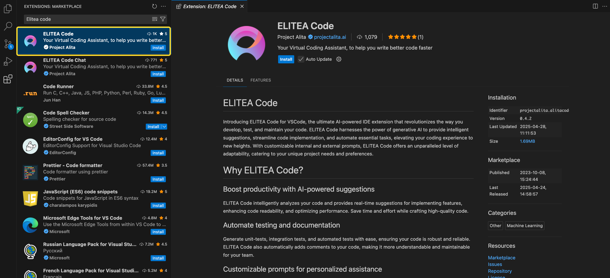
Configuration on ELITEA¶
To configure the necessary parameters for the Elitea Code extension, follow these steps:
- Go to Settings → Configuration on the ELITEA.
- Click the + icon to create a new token.
- Enter a name and set an expiration date for the token.
- Click Generate to create the token.
- Immediately copy and securely store the generated token; it will not be visible again once you close the pop-up window.
- From the Integration Option dropdown list, select the desired LLM model (e.g., gpt-4o-2024-11-20, gpt-4o-2024-08-06, gpt-4o, etc.).
- Once the LLM model is selected, the Download VS Code Settings icon will appear next to the created token.
- Click this icon to download the
settings.jsonfile, which contains all necessary configuration information for integration with VS Code.
Note: The settings.json file includes essential information such as Project ID, ELITEA's URL, LLM model, Integration UID, and the generated token.
Important: Alternatively, you can manually copy and paste all required parameters into the Elitea Code extension's settings in VS Code.
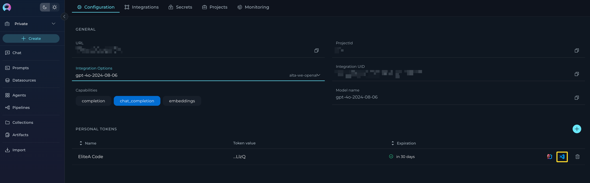
Configuration on VS Code¶
Once ELITEA Code is installed, setting it up to work with your project in ELITEA involves:
- Open your project in VS Code.
- Navigate to the
.vscodefolder and open thesettings.jsonfile. If this folder does not exist, create it and add asettings.jsonfile. - Open the
settings.jsonfile downloaded from ELITEA . - Copy all information from this file into the
.vscode/settings.jsonfile in your project. Note: Be careful not to overwrite other configurations. If previous ELITEA Code configurations exist, remove them before adding new information. - Save the file. The integration settings will now be applied under Elitea Code → Extension Settings → Workspace tab.
- Go to Extensions → ELITEA Code → Extension Settings. Open the Workspace tab and verify that all parameters are correctly populated from the
settings.jsonfile. Note: Manual adjustments can be made if necessary.
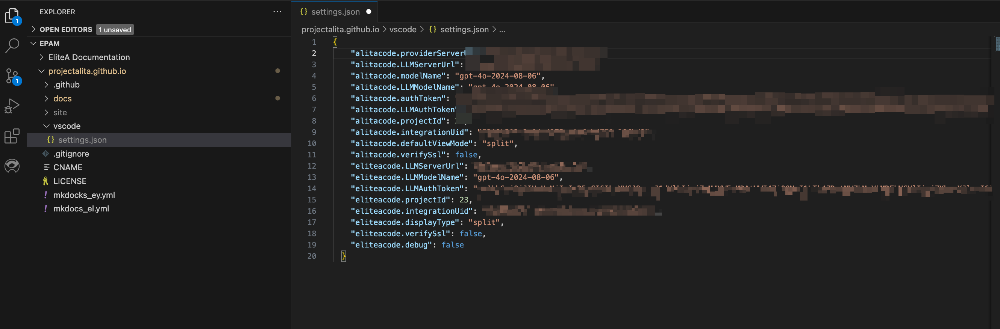
Types of Settings in ELITEA Code¶
Elitea Code offers two types of settings to cater to different needs:
- User Settings: These are global settings that apply to all sessions across any workspace, providing a consistent environment across your projects.
- Workspace Settings: These are specific to a particular workspace, allowing for tailored configurations such as different project IDs or models, which is essential for managing separate environments or specific tasks.
The following settings are available in both tabs (which can either be prepopulated or manually configured):
Main Settings:
- Eliteacode: LLMServer Url: Enter the URL of your LLM service provider. For connecting to ELITEA Next env., use
https://next.elitea.ai/. - Eliteacode: LLMAuth Token: Provide your token for authentication with the LLM service provider. For ELITEA Prod env, input the generated Token.
- Eliteacode: Project ID: Input the Project ID for the ELITEA backend.
-
Eliteacode: Display Type: Choose how the prediction results are displayed:
-
append - when you run
ELITEA Predictthe results will be displayed after the text or part that you have selected. - split - when you run
ELITEA Predictthe results will be displayed in a separate place (view). - replace - when you run
ELITEA Predictthe results will be displayed instead of the text or part that you have selected. -
prepend -when you run
ELITEA predictthe results will be displayed before the text or part that you have selected. -
Eliteacode Verify Ssl: Toggle this setting to verify the LLM service provider's SSL certificate. For Next env, keep this checkbox not selected.
- Eliteacode: Enable: Toggle to enable or disable the ELITEA Code extension as needed.
- Eliteacode: Debug: Toggle to enable or disable the debugging feature as needed.
Integration Settings:
Eliteacode: Select Integration: Click here to select link to select the available models from dropdown list for above selected environment. Note: After selection the corresponding information will be automatically populated for Eliteacode: LLMModel Name, Eliteacode: Integration Name and Eliteacode: Integration Uid fields. * Eliteacode: LLMModel Name: Write manually the desired LLM model name, if you don't want to preopoluate all information from . * Eliteacode: Integration Name: This is the integration type which is used for selected LLM model setup in ELITEA→Settings-Integrations page. Will automatically be populated and set after selecting LLM model from Eliteacode: Select Integration. * Eliteacode: Integration Uid: Enter the Integration UID from the ELITEA backend. Will automatically be populated and set after selecting LLM model from Eliteacode: Select Integration.
Advanced Settings:
- Eliteacode: Custom Model Tokens: Set the maximum completion tokens for selected custom model. This setting defines the maximum length of the AI's generated response, measured in tokens.
- Eliteacode: Max Tokens: Set the maximum completion tokens for selected model. This setting defines the maximum length of the AI's generated response, measured in tokens.
- Eliteacode: Temperature: Adjust the temperature setting for the selected model to control the randomness of the output.
- Eliteacode: Top P: Set the Top P value for the selected model. Also known as nucleus sampling, Top P offers another way to control the randomness of the output.
- Eliteacode: Top K: Set the Top K value for the selected model. This parameter limits the AI's token selection to the K most likely tokens at each step of the generation process.
These settings ensure that ELITEA Code is properly configured to interact with the ELITEA, allowing for seamless integration and efficient use of LLM models within your projects.
Note: Restarting VS Code may be necessary for changes to take effect.
Configuring ELITEA Code¶
To initialize ELITEA Code in your project:
- Open any file and right-click to select ELITEA → Init.
- This creates a
.promptLibfolder with default prompts andprompts.jsonfiles.
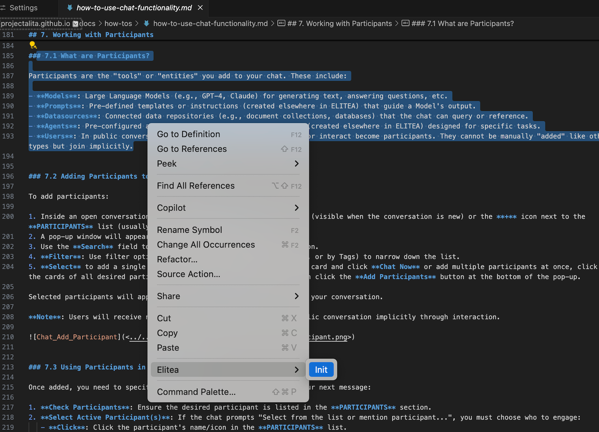
ELITEA Code Usage¶
Getting Started with Extension Commands¶
Jumpstart your Elitea Code experience with these essential commands:
- Elitea: Init: Initialize Elitea Code in your workspace by creating a
.promptLibfolder at the root. Note: After successful initalization theElitea: Initcommand becomes unavailable. - Elitea: Create Prompt: Craft a new prompt within the
.promptLibfolder. - Elitea: Extend Context: Enhance the context of an existing prompt in the
.promptLibfolder. - Elitea: Predict: Choose from a list of prompts and generate predictions based on your selection.
- Elitea: Sync External Prompts: Synchronize your external prompts, agents and datasources with ELITEA Backend.
Elitea Code is designed to be your coding companion, offering a blend of AI-powered efficiency and customizable support. Whether you're looking to enhance your productivity, streamline your testing process, or simply make your code more understandable, Elitea Code is here to help. Let's embark on this journey to revolutionize your coding experience together.
Synchronize External Prompts¶
Sync prompts, agents and datasources created in the Elitea with your Elitea Code setup for seamless integration:
- Open
prompts.json: Locate and open theprompts.jsonfile. - Access Elitea Menu: Right-click in the editor to see the Elitea menu option.
- Sync Prompts Option: Select
Elitea: Sync External Promptsfrom the submenu. - Synchronization: The prompts, agents and datasources will be synced and added to the
prompts.jsonfile. - Usage: These prompts, agents and datasources are now ready to be used with
Elitea: Predictcommand.
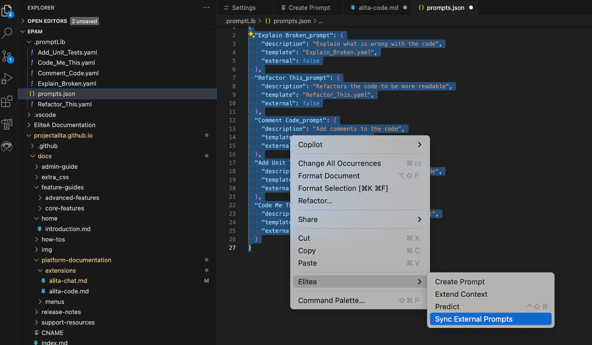
Note: To sync and use prompts, agents and datasources from ELITEA, tag the prompt with code in ELITEA .
Create a Prompt¶
Creating a custom prompt in Elitea Code allows you to tailor Gen AI suggestions to your specific tasks. Here's how to create one:
- Open a File: Start by opening any file from your project, or create a new one.
- Access Elitea Menu: Right-click in the editor view to bring up the context menu, where you'll find the Elitea item.
- Create Prompt Option: Hover over Alita in the menu, and on the second level menu, select
Create Prompt. - Name Your Prompt: Enter a name for your prompt-template, such as "Generate unit-tests".
- Describe Your Prompt: Press Enter and provide a description for your prompt.
- Provide Prompt Content: Press Enter again and input the content of your prompt. This can be modified later in the
.promptLibfolder. - Finalize Creation: Hit Enter to finalize. Elitea will add a reference to the new prompt in
prompts.jsonand create a corresponding.yamlfile in the.promptLibfolder, which can be edited to extend content and add examples.
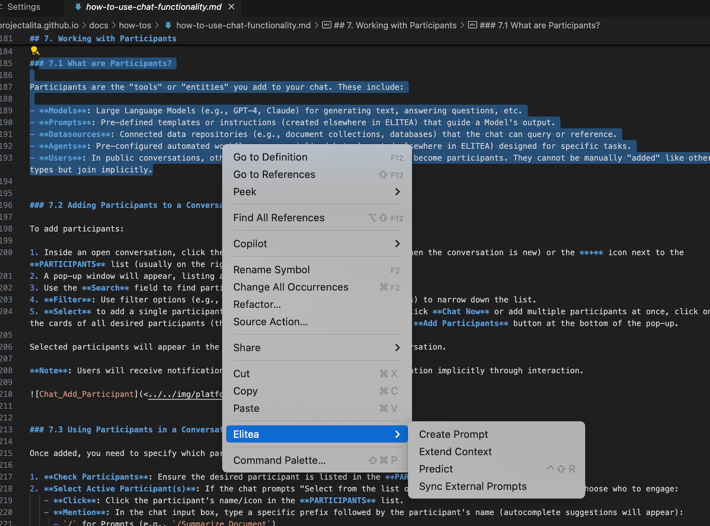
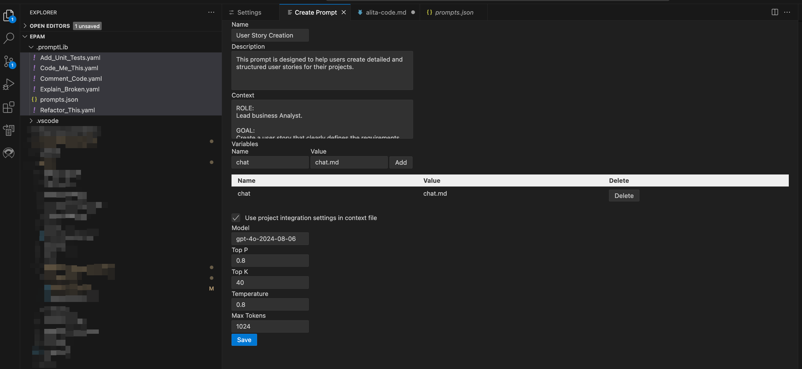
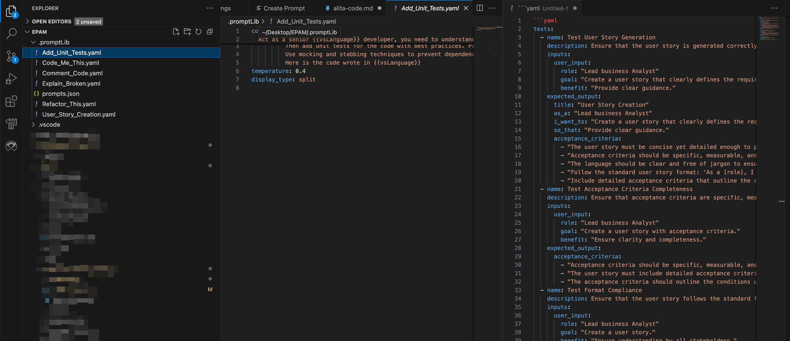
Extend Prompt Context¶
Enhance the context of an existing prompt with selected text from your code, improving the relevance of AI suggestions:
- Open and Select: Open any file from your project and select a portion of the text.
- Access Elitea Menu: Right-click to open the context menu and find the Elitea item.
- Extend Context Option: Hover over Elitea and select "Extend Context" from the submenu.
- Choose a Prompt: Pick the prompt you wish to extend the context for from the dropdown list.
- Extend Context: The selected text will be automatically added to the prompt's context, enriching its understanding for future suggestions.
Predict (Execute) Prompt¶
To predict (execute) a prompt or an agent or a datasource directly from VS Code to generate Gen AI-driven code suggestions:
- Open a File and Select Text: Open any project file and select the text you want to analyze or for which you need suggestions.
- Access Elitea Menu: Right-click in the editor view to see the Elitea menu item.
- Predict Option: Hover over Elitea and choose
Elitea Predictfrom the submenu. - Select a Prompt, Agent or Datasource:
- Choose the desired prompt, agent or datasource from the dropdown list.
- Version Selection: Prompts may have multiple versions. Ensure you select the appropriate version from the dropdown list as different versions may vary in functionality and variables.
- Variable Management: If the selected prompt version includes variables, you will either see prepopulated values or you can provide your own values. Ensure that all required variables are correctly filled to execute the prompt accurately.
- View Predictions: After execution, the generated response will be displayed in your editor according to the method specified in your Elitea Code: Default View Mode settings. This could be appended, replaced, split, or prepended based on your configuration.
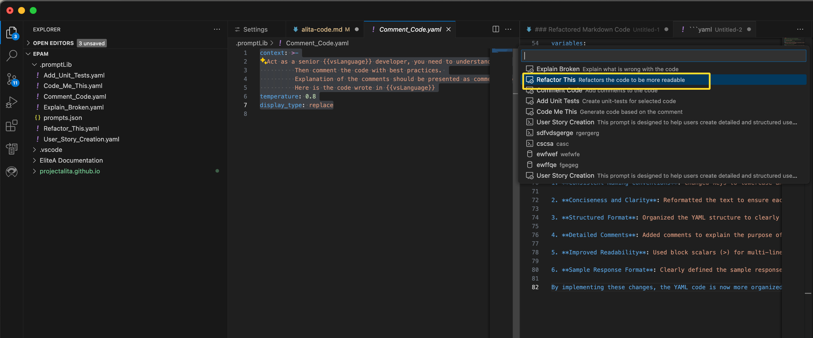

Note: You can use default prompts, those you've created, or external prompts, agents and datasources synced from ELITEA Platform.
EliteaCode for IntelliJ Idea¶
EliteaCode is a IntelliJ plugin to handle prompt-engineering based code generation using ELITEA as a backend.
Installation¶
Getting started with Elitea Code is straightforward and involves a few simple steps:
- Navigate to the Settings→Plugins section in IntelliJ.
- Search for Elitea in the Marketplace and click Install.
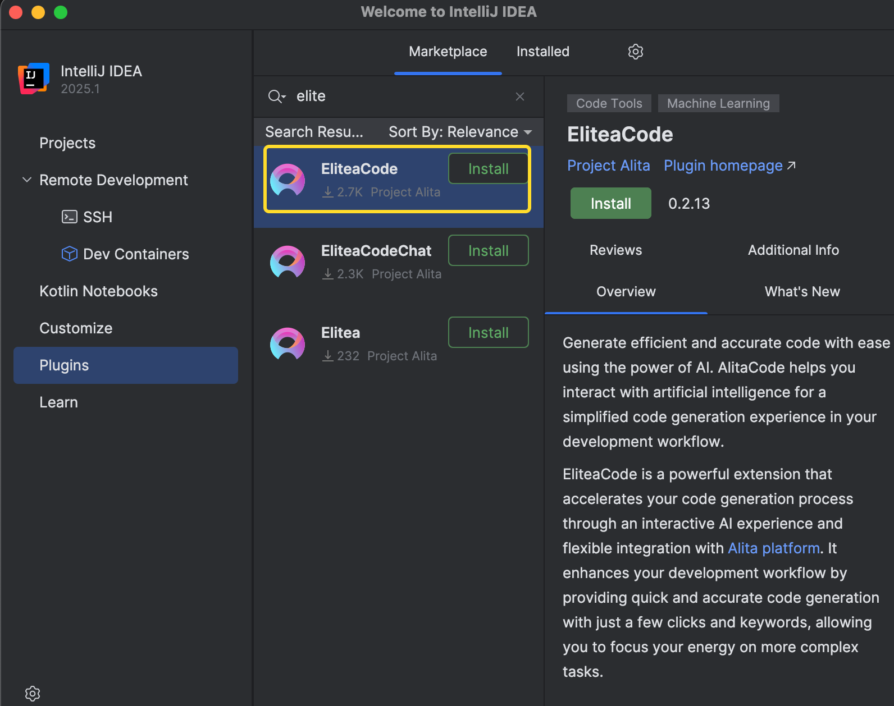
Configuration on ELITEA¶
To configure the necessary parameters for the Elitea Code extension, follow these steps:
- Go to Settings → Configuration on the ELITEA.
- Click the + icon to create a new token.
- Enter a name and set an expiration date for the token.
- Click Generate to create the token.
- Immediately copy and securely store the generated token; it will not be visible again once you close the pop-up window.
- From the Integration Option dropdown list, select the desired LLM model (e.g., gpt-4o-2024-11-20, gpt-4o-2024-08-06, gpt-4o, etc.).
- Once the LLM model is selected, the Download Jetbrains Settings icon will appear next to the created token.
- Click this icon to download the
alita.xmlfile, which contains all necessary configuration information (except generated token) for integration with IntelliJ.
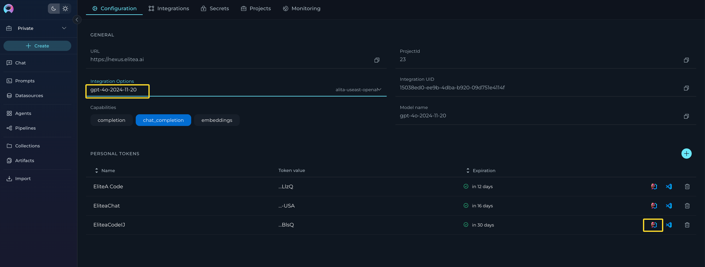
Configuration on IntelliJ¶
Once Elitea Code is installed, setting it up to work with your project in ELITEA involves:
- Open your project in IntelliJ.
- Navigate to the
.ideafolder and open thealita.xmlfile. If this folder does not exist, create it and add aalita.xmlfile. - Open the
alita.xmlfile downloaded from ELITEA. - Copy all information from this file into the
.idea/alita.xmlfile in your project. Note: If previous Elitea Code configurations exist, remove them before adding new information. - Save the file. The integration settings will now be applied under Settings → Tools → Alita tab.
- Go to Settings → Tools → Alita. Open it and verify that all parameters are correctly populated from the
alita.xmlfile. - Copy and paste generated token to the LLM Auth Token field.
- Check and apply configuration:
- Click the Reload icon next to the Integration Name dropdown list.
- Select the
alita-useast-openaias an integration and model gpt-4o-2024-11-20 for an example and click OK button.
- To complete the setup click the OK button.

Settings in Elitea Code¶
Elitea Code includes the following settings:
- LLM Provider: Select the LLM Provider. To connect with ELITEA Platform, select
ELITEAoption. -
- LLM Auth Token: Provide your Bearer token for the LLM service provider.
- Provide Settings
- Project ID: Enter the Project Id for ELITEA Backend, ignored for OpenAI.
- LLM Server URL: Enter the URL to your LLM service provider. (e.g.
https://next.elitea.ai) - Integration Name: Select the integration and integration model (e.g. alita-useast-openai gpt-4o-2024-11-20)
- Integration UID: Enter the AI integration Id from ELITEA Backend, ignored for OpenAI.
- LLM Model Name: Choose the LLM model from the dropdown list.
- Custom Model Name: Enter a custom model name if the desired model is not listed. Check the Use custom model checkbox.
- Display Type: Select the default display mode for the predictions.
- append - when you run
Elitea Predictthe results will be displayed after the text or part that you have selected. - split - when you run
Elitea Predictthe results will be displayed in a separate place (view). - replace - when you run
Elitea Predictthe results will be displayed instead of the text or part that you have selected.
Advanced Settings:
* LLM Response Timeout: Set the response timeout, default is 90 seconds.
* Max Tokens: Set the max tokens for the selected model.
* Temperature: Adjust the temperature for the selected model.
* Top K: Set the Top K value for the selected model.
* Top P: Set the Top P value for the selected model.
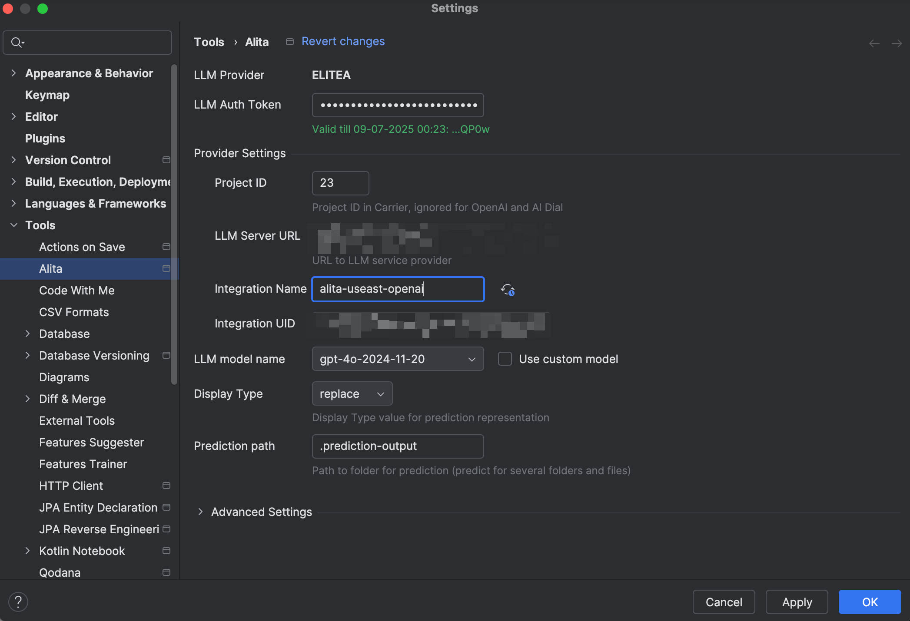
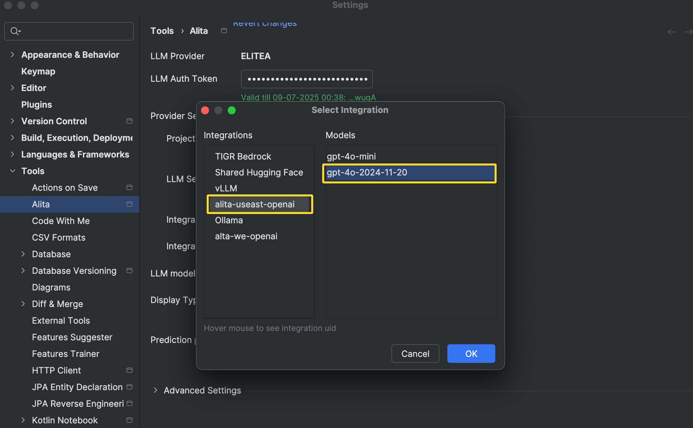
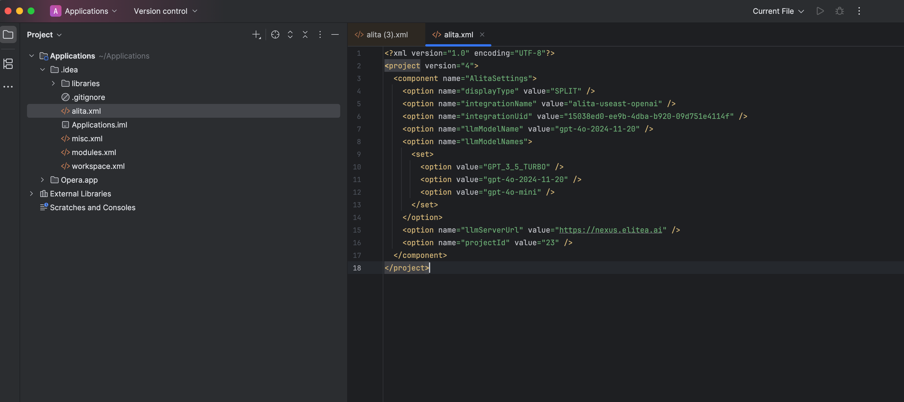
These settings ensure that Elitea Code is properly configured to interact with the ELITEA, allowing for seamless integration and efficient use of LLM models within your projects.
Note: Restarting IntelliJ may be necessary for changes to take effect.
Configuration¶
To initialize Elitea Code in your project:
- Open any file and right-click to select Alita → Alita:Init.
- This creates a
.promptLibfolder with default prompts andprompts.jsonfiles.
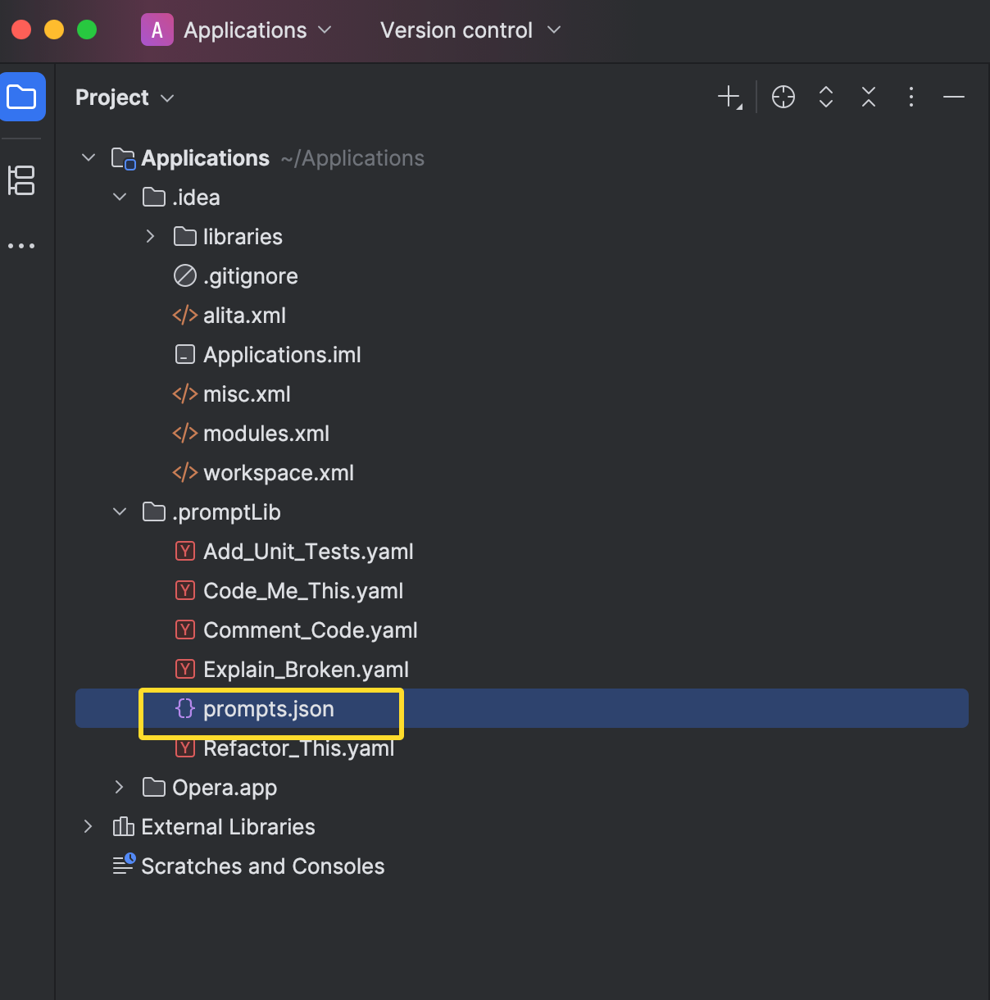
EliteaCode Usage¶
Getting Started with Extension Commands¶
Jumpstart your Elitea Code experience with these essential commands:
- Alita: Init: Initialize Elitea Code in your workspace by creating a
.promptLibfolder at the root. Note: After successful initalization theAlita: Initcommand becomes unavailable. - Elitea: Create Prompt: Craft a new prompt within the
.promptLibfolder. - Elitea: Edit Context: Edit the context of an existing prompt in the
.promptLibfolder. - Elitea: Predict: Choose from a list of prompts and generate predictions based on your selection.
- Elitea: Sync External Prompts: Synchronize your external prompts, agents and datasources with ELITEA Backend.
Synchronize External Prompts¶
Sync prompts, agents and datasources created in the ELITEA with your Elitea Code setup for seamless integration:
- Open
prompts.json: Locate and open theprompts.jsonfile. - Access Alita Menu: Right-click in the editor to see the Alita Actions item.
- Sync Prompts Option: Select the Alita: Sync External Prompts option from the submenu.
- Synchronization: The prompts, agents and datasources will be synced and added to the
prompts.jsonfile. - Usage: These prompts, agents and datasources are now ready to be used with
Alita: Predictcommand.
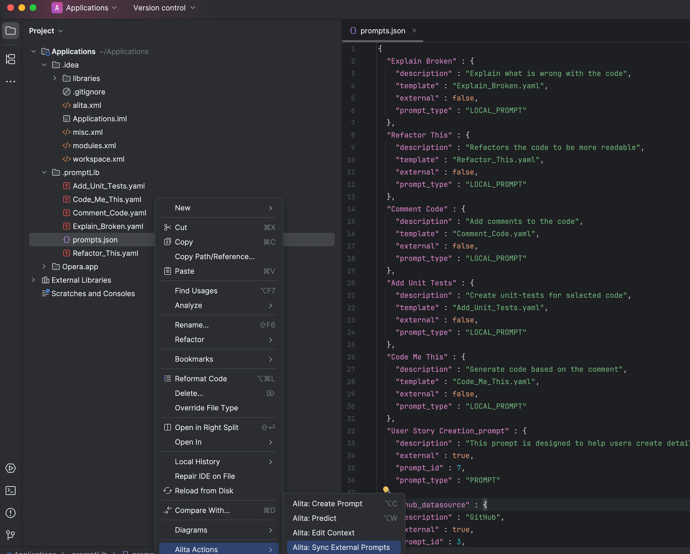
Note: To sync and use prompts, agents and datasources from ELITEA, tag the prompt with code in ELITEA.
Create a Prompt¶
Creating a custom prompt in Elitea Code allows you to tailor Gen AI suggestions to your specific tasks. Here's how to create one:
- Open a File: Start by opening any file from your project, or create a new one.
- Access Elitea Menu: Right-click in the editor view to bring up the context menu, where you'll find the Alita Actions item.
- Create Prompt Option: Hover over Alita Actions in the menu, and on the second level menu, select Alita: Create Prompt. The Create Prompt window is opened:
- Name: Assign a descriptive name that clearly reflects the aim of the prompt.
- Description: Summarize the purpose of the prompt, detailing what it intends to achieve.
- Context: Well crafted prompt corresponding to well-acceppted Frameworks for creating prompts (e.g. CREATE, CRISPE, Elavis Saravia, etc.). In case the prompt's context contains Variables, then provide the names and values of the variables in the Variables section.
- Click the Use the project integration settings in the context file checkbox to configure Model, Top-P, Top-K, Tempreature and MaX Tokens settings.
- Click the Ok button to create a prompt. This can be modified later in the
.promptLibfolder. Alita Code will add a reference to the new prompt inprompts.jsonand create a corresponding.yamlfile in the.promptLibfolder, which can be edited to extend content and add examples.
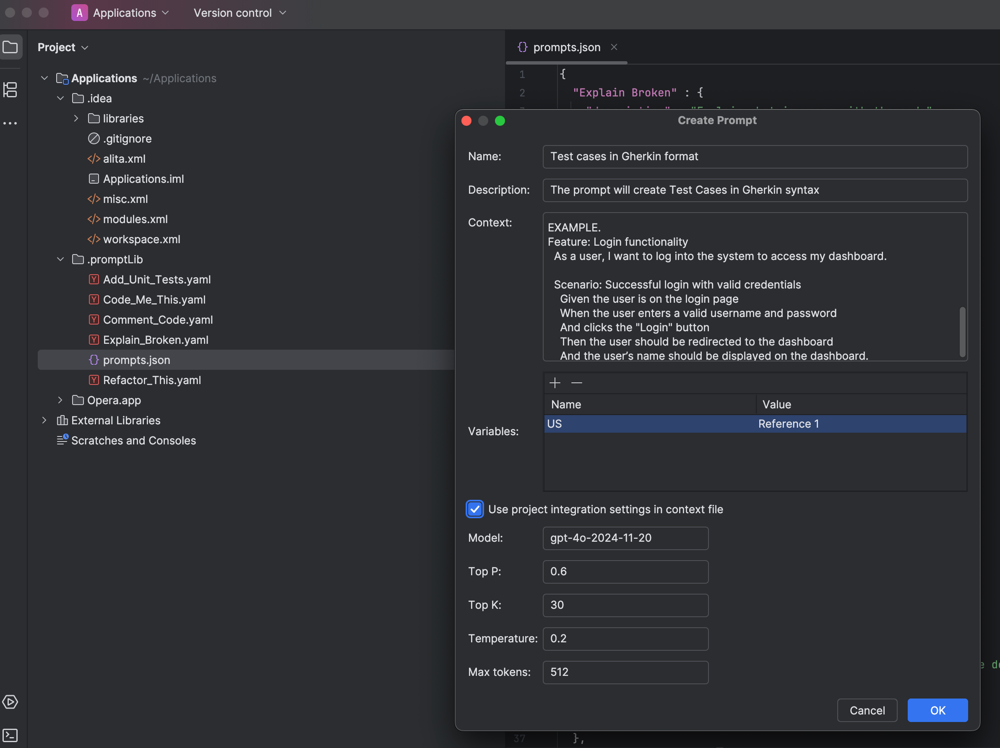
Edit Prompt Context¶
Enhance the context of an existing prompt with selected text from your code, improving the relevance of AI suggestions:
- Open and Select: Open any file from your project and select a portion of the text.
- Access Alita Menu: Right-click to open the context menu and find the Alita Actions item.
- Edit Context Option: Hover over Alita Actions and select Alita: Edit Context from the submenu.
- Choose a Prompt: Select the prompt you wish to modify for from the list and click the Edit button.
- Edit Context The selected prompt's
yamlfile will be opened where you can make the changes.
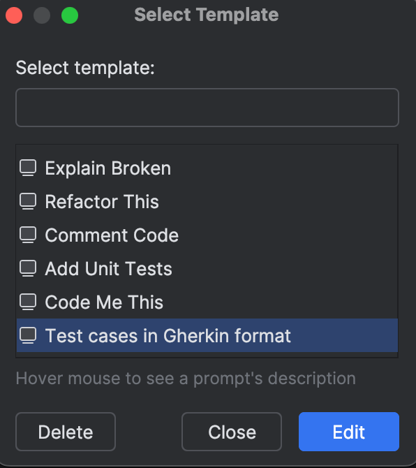
Predict (Execute) Prompt¶
To predict (execute) a prompt or an agent or a datasource directly from IntelliJ to generate Gen AI-driven code suggestions:
- Open a File and Select Text: Open any project file and select the text you want to analyze or for which you need suggestions.
- Access Alita Menu: Right-click in the editor view to see the Alita Actions item.
- Predict Option: Hover over Alita Actions and choose Alita: Predict from the submenu.
- Select a Prompt, Agent or Datasource:
- Choose the desired prompt, agent or datasource from the dropdown list.
- Version Selection: Prompts may have multiple versions. Ensure you select the appropriate version from the dropdown list as different versions may vary in functionality and variables.
- Variable Management: If the selected prompt version includes variables, you will either see prepopulated values or you can provide your own values. Ensure that all required variables are correctly filled to execute the prompt accurately.
- View Predictions: After execution, the generated response will be displayed in your editor according to the method specified in your EliteaCode: Display Type.
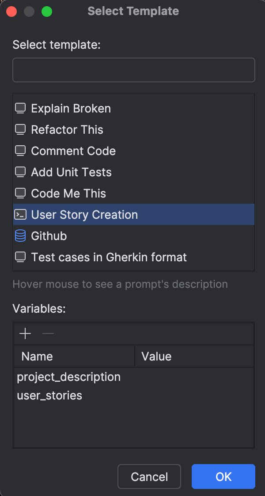

Note: You can use default prompts, those you've created, or external prompts, agents and datasources synced from ELITEA Platform.